CX · Support · Consumer · Gen AI
Optimizing Gen AI conversational workflows across 35M monthly support sessions — a data-driven audit that uncovered up to $29M in annual support cost savings for Google.
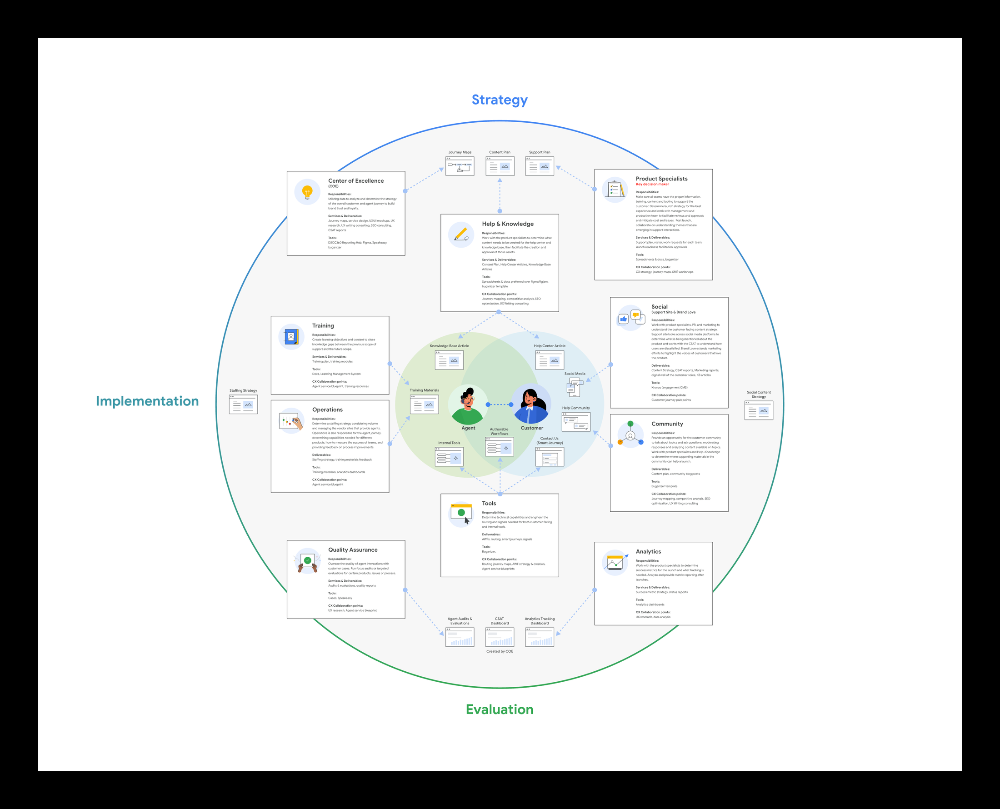
Product launch ecosystem · Strategy · Implementation · Evaluation
01 — Situation
Every month, more than 35 million users reached out to Google's support services to resolve an issue. A significant portion of those sessions escalated to a human agent — and every escalation is a direct cost to the business. Google's Gen AI conversational workflows (cAWFs) were supposed to contain customers within self-service. The data showed they weren't.
Significant investments had been made into Google's guided support experience (GSE) with the expectation of reducing contact volume. Instead, GSE was delivering a neutral experience — neither increasing nor decreasing escalations. The challenge was to understand why the cAWF experience wasn't working, and what was driving users to abandon self-service.
The business goal
Reduce escalation to human agents and increase CSAT — while keeping customers in self-service, the preferred and lowest-cost channel.
The research goal
Build a scalable framework to measure cAWF efficacy, identify failure points, and quantify the cost savings potential of improvements.
"The challenge is to understand what is happening in the GSE experience and the drivers pushing the cAWF experience to not result in the expected reduction of contact volume."
Key issues identified
Incorrect entry point
Users reaching wrong cAWF for their transaction type
Transaction not completable
Users unable to finalize refunds or purchases through cAWF
Abandonment & refund UX
Refund status unclear, driving unnecessary escalation
Limited troubleshooting
Troubleshooting options insufficient, pushing users to agents
Contact CTA placement
Support agent CTA positioned too prominently at end of cAWF
Multiple requests blocked
Users unable to handle more than one issue per session
Navigation usability
Poor navigation structure creating confusion and dead ends
Language mismatch
cAWF copy not matching how customers phrase their queries
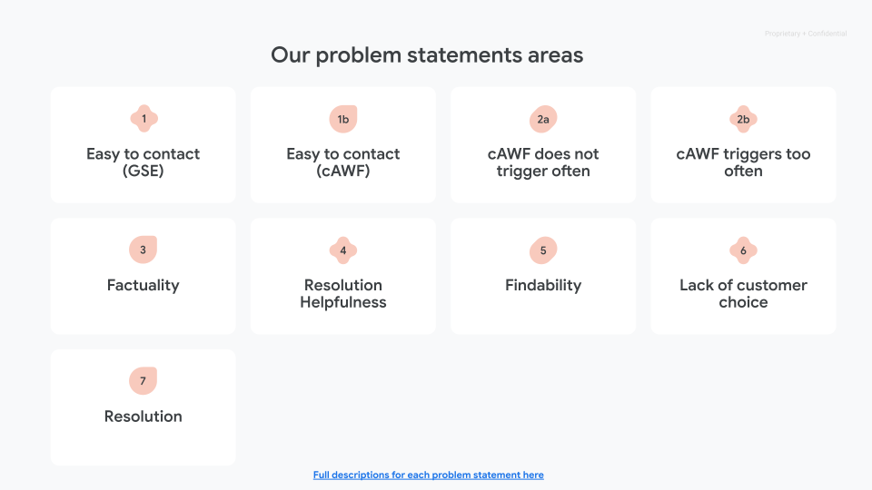
Synthesis · Problem statement areas · Seven prioritized themes
02 — My Role
I led the UX workstream of the cAWF efficacy study, working as part of the Shannon Rodberg CX/UX team at Google. My role spanned the full arc of the engagement: structuring the research approach, leading stakeholder and SME interviews, defining the metrics program, orchestrating the data-driven audit, and translating findings into prioritized recommendations.
I managed a cross-functional team — UX researcher, data analyst, SEO specialist, and content specialist — across two parallel scrum tracks (Delivery Issues cAWFs and Play cAWFs) running simultaneously. The output was a scalable optimization framework that xFN teams across Google could apply to their own cAWFs.
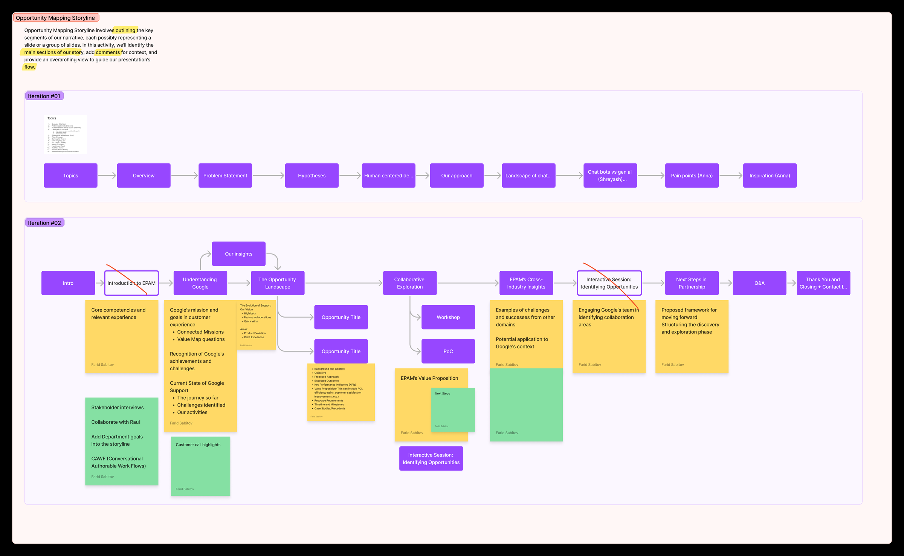
Framing · Opportunity mapping storyline · Structuring the research narrative
03 — Design Process
The engagement followed a structured two-month research arc, built around a core discovery model that fed directly into prioritized optimization recommendations. Two scrum teams ran in parallel — one focused on Delivery Issues cAWFs, one on Play cAWFs — converging on the same hypothesis and metrics framework.
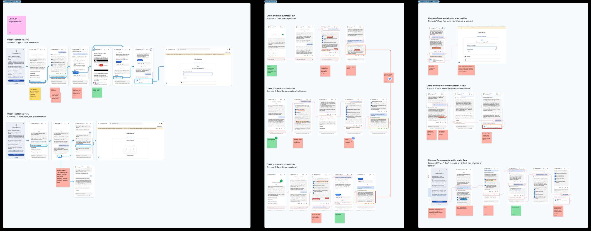
Audit · Transcript-coded success vs. escalation flows · Failure-moment mapping
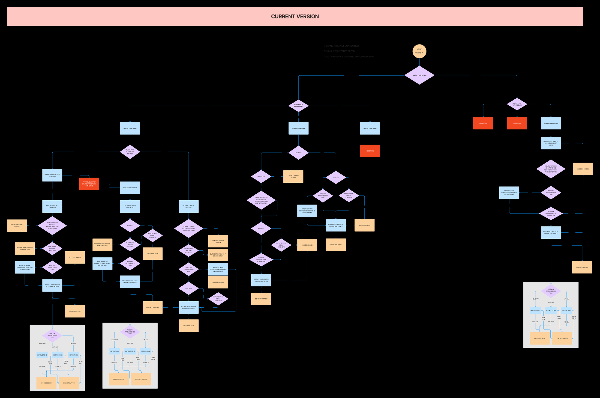
Current state · cAWF decision flow · Entry points & branch logic mapped
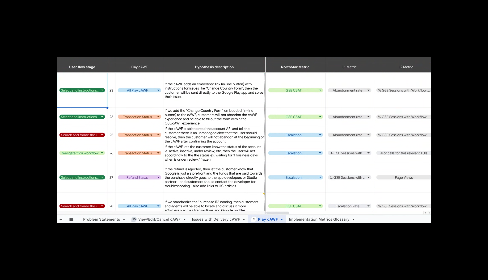
Metrics program · Hypotheses → North Star · L1 · L2
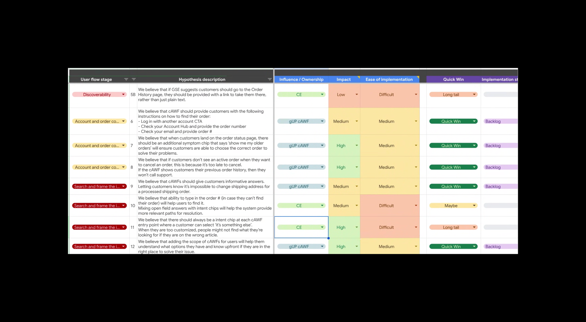
Prioritization · Impact × effort · Quick-win flags
04 — Results
The team uncovered systemic inefficiencies across Google Play and gStore post-purchase journeys — producing a comprehensive prioritized requirements list and optimization roadmap. Quick wins were documented as bug tickets for immediate implementation; larger structural improvements were packaged as experiment plans for PSM-led workstreams.
Beyond the immediate recommendations, the engagement produced a scalable framework for measuring and optimizing cAWF quality — one that xFN gUP teams across Google could apply to their own workflows. The methodology became the standard for the cAWF efficacy study program.
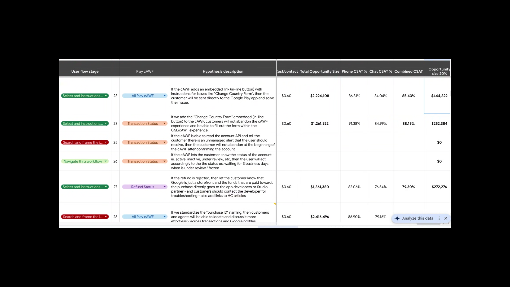
Quantification · Opportunity sizing · CSAT & dollar impact per flow
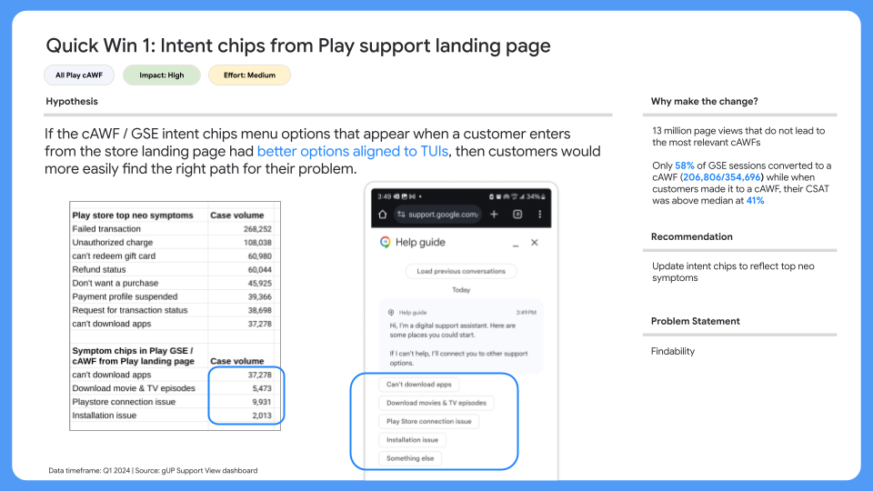
Quick win · Intent chips aligned to top symptoms
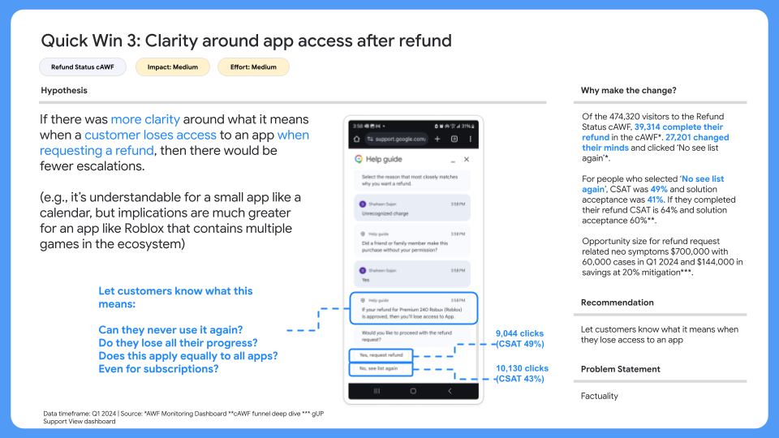
Quick win · Clarity on app access after refund
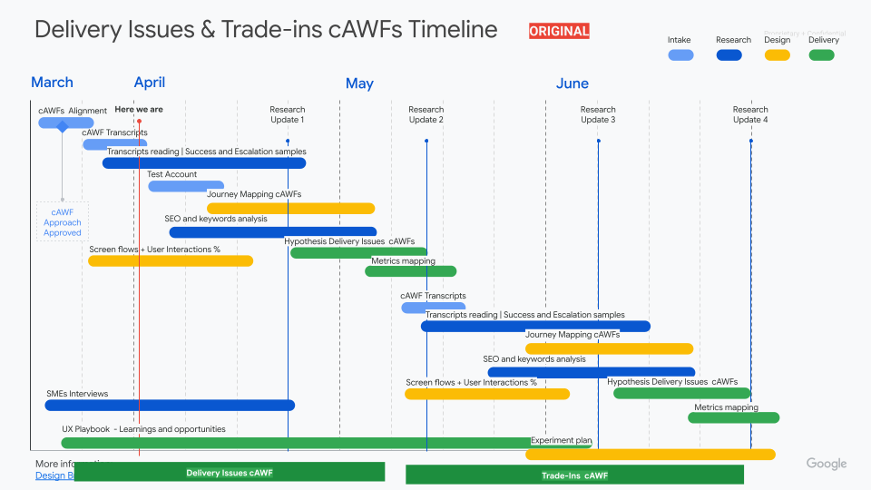
Roadmap · Two parallel research tracks · Discovery → experiment plan